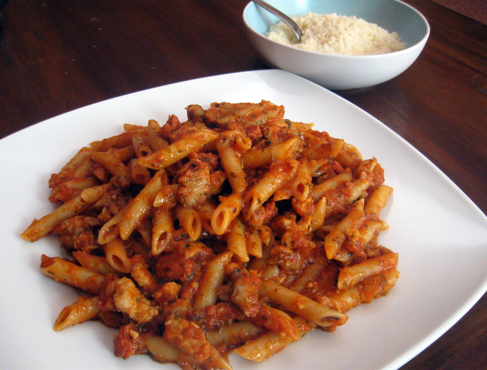

Macarrones con chorizo
Receta de macarrones con chorizo

Ingredientes
400 g de macarrones
250 g de chorizo dulce o picante
1 kg de tomats maduros
1 cebolla
1 diente de ajo (opcional)
1 pizca de azúcar
Aceite de oliva
1 hoja de laurel
Orégano seco
Sal y pimienta
Elaboración (Pasos)
Preparar la salsa de tomate con chorizo.
Hervir los macarrones.
Freír al gusto.
Servir en plato.